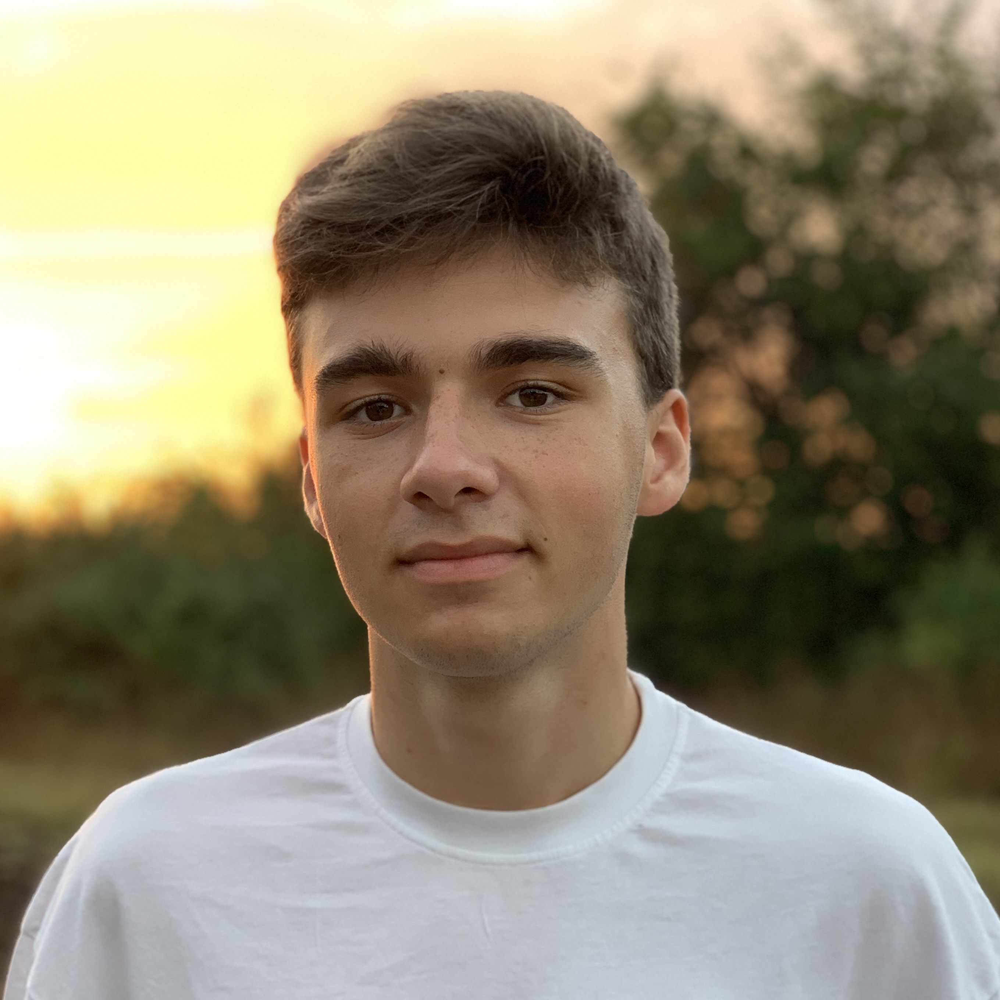

Alexei Pavlovschii
Phone number:
(+373) 79181895
Email address:
alexei.pavlovschii@isa.utm.md
Email address:
alexisdandy15@gmail.com
Website:
https://github.com/AlexDandy77
Home:
bd. Moscova, 13, 2068 Kishinev